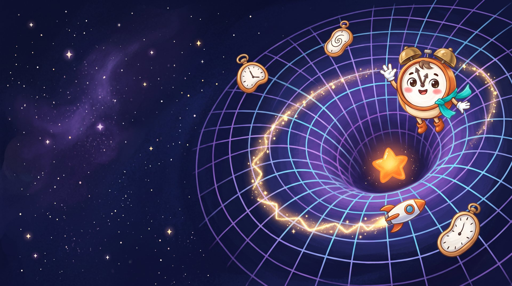

Gumowy czas
piaskownica teorii względności
1
Prędkość
szczególna teoria
2
Grawitacja
ogólna teoria
3
Razem
prędkość + grawitacja
1 s pokazu =
1 sekunda
1 minuta
1 godzina
1 doba
1 rok
?
Z boku
widzisz ty
Z kokpitu
widzi pilot
dotknij siatki: rzuć kulkę
· przeciągnij: obróć · kółko myszy: przybliż
PAUZA
Zsynchronizowane zegary
⟲ Synchronizuj od nowa
Mapa efektu
Zadania
0/0
To dzieje się naprawdę
‹
›

← Projekty
🔊 Tik mówi
🔇 Tik milczy
Kliknij mnie!
Plac zabaw z teorią Einsteina
Gumowy czas
Czas umie się rozciągać jak guma.
Sprawdź, jak to zrobić!
🚀
Pędź jak światło
rozpędź rakietę
🌀
Ugnij czas
od Księżyca po czarną dziurę
albo jedno i drugie naraz →
×
Słowniczek